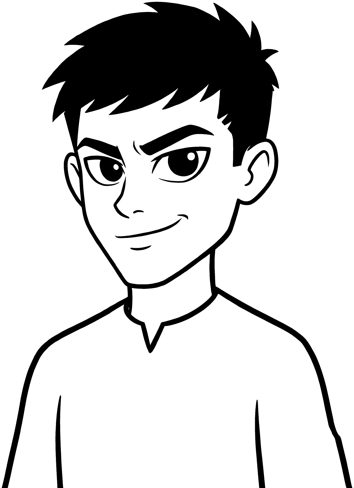
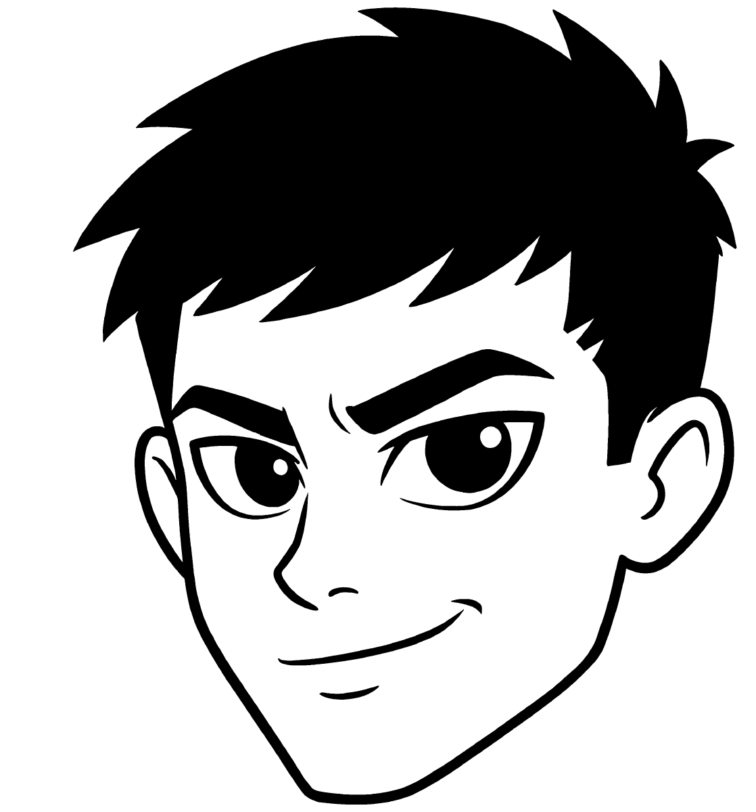

PORTFLIO
Monteur vidéo / Motion designer
2026
Lucas B.
Un projet vidéo ? Écrivez-moi ↓Lucas B. · Monteur vidéo · Intros YouTube · Motion design · Sound design · Sous-titres · À distance


JE MONTE VOS VIDÉOS
Youtubeurs, créateurs, marques, agences : vous m’envoyez vos rushs, je vous rends une vidéo rythmée, sous-titrée et habillée, prête à publier.
Parlons de votre projet ↓Portfolio de Lucas B.
Montage
vidéo
00:00:48:23 · 30 i/s
2026 Portfolio
MONTAGE
& MOTION
Montage Tibo InShape — face cam, effets, motion d’interface
0:45
Votre face cam
devient un film
Un plan fixe, 1 min 40 de rush : j’en ai tiré 45 secondes où chaque phrase déclenche sa scène. Décors, effets, interface, clones. Comparez avec le rush brut.
Montage, effets, motion design, sound design, étalonnage : Lucas B.
Intro YouTube — Femz [APEX] · face cam, motion d’interface
0:38
Montage, motion design, sound design, étalonnage : Lucas B.
Montage Dubaï — film de voyage
0:49
Montage, effets, son, étalonnage : Lucas B.
Montage Miami — Miami Beach, de nuit
0:50
Montage, effets, son, étalonnage : Lucas B.
Montage One Piece — edit d’animé
1:23
Montage, effets, sous-titres : Lucas B.

PORTFOLIO 2026
Dites-moi le format, la durée et la date voulue.
Un projet vidéo ?Écrivez-moi ↓
MERCI
Portfolio de Lucas B.
2026
- Coordonnées à venir
- Téléphone · à venir
- E-mail · à venir
- Discord · à venir
Images et musiques des films : © leurs auteurs · rushs et éléments graphiques de l’intro : Femz [APEX] · rush du montage Tibo : Tibo InShape · musique du montage Tibo : « Final Battle of the Dark Wizards », Kevin MacLeod (incompetech.com), CC BY 4.0 · images Wikimedia Commons : Rjcastillo et Marcomogollon (CC BY-SA 4.0), daryl_mitchell (CC BY-SA 2.0), Tim (CC BY 2.0) · vidéos Mixkit et Pexels · quelques plans de Dubaï générés par IA · sons « Canon DOS D30 (no focus).wav » par FreqMan et « camera_shutter.wav » par reinsamba, CC BY 4.0 · illustrations générées par IA à partir de mes photos.